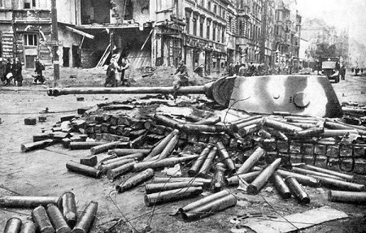
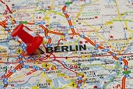
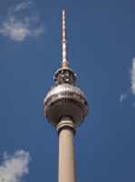
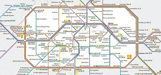

Berlin to stolica Niemiec. Jest też największym miastem w tym kraju. Zamieszkuje go 3,4 mln osób. Jest trzecim największym państwem w Unii Europejskiej, a jego powierzchnia to 891,85 km2. Znajduje się kilkanaście metrów nad poziomem morza. Podzielony jest na 12 okręgów administracyjnych. Burmistrzem jest Michael Muller.
Historia miasta  Początkowo obszar ten był zamieszkiwany przez przedstawicieli kultury halsztackiej. Germanie dotarli tam ok. XIII-XII w p.n.e. Sprewianie - zachodniosłowiańskie plemię - założyli tam gród Kopanica. Miał on zadatki na utworzenie państwa, jednak działania księcia Polan i króla Niemiec doprowadziły do upadku ośrodków protopaństwowych. Już w 1200 roku był poddany kolonizacji niemieckiej. Kilkakrotnie pełnił rolę stolicy państw niemieckich. Nazwę Berlin po raz pierwszy wymieniono w 1244 roku. Wielokrotnie rozszerzano obszar tego miasta. W 1918 roku ogłoszono tam republikę. W 1933 roku stał się stolicą III Rzeszy. Trzy lata poźniej w Berlinie odbyły się igrzyska olimpijskie. W czasie II wojny światowej część miasta została zniszczona. Po jej zakończeniu podzielono go na 4 strefy wpływów - amerykańską, francuską, brytyjską i radziecką. Trzy pierwsze w 1949 roku przekształciły się w Trizonię, która z kolei stała się RFN, z radzieckiej zaś powstało NRD. W latach 1961-1989 oddzielono Berlin Zachodni (okupacja radziecka) murem, którego zburzenie w 1989 roku jest symbolem zjednoczenia miasta i państwa. Od 1991 roku jest stolicą Niemiec. Do góry Warunki geograficzne w mieście  Miasto leży we wschodniej części Niemiec. Przepływają przez niego dwie duże rzeki - Sprewa i Hawela oraz ich dopływy. Jest to teren przeważnie nizinny, najwyższe wzniesienie ma wysokość 115,4 m n.p.m. Odległość do granicy z Polską wynosi 90 kilometrów. Berlin leży w strefie klimatu umiarkowanego, w związku z czym pogoda jest bardzo podobna do polskiej - lata są ciepłe i słoneczne, a zimy chłodne i mokre. Największe temperatury odnotowuje się w lipcu i sierpniu, a najniższe - w styczniu i lutym. Do góry Zabytki  Brama Brandenburska - powstała według projektu niemieckiego architekta Carla Gottharda Langhansa w latach 1788-1791 po wojnie siedmioletniej. Na jej szczycie widnieje Wiktoria, bogini zwycięstwa. Nazwana została Bramą Pokoju. Od 3 października 1990 roku jest symbolem Pokoju i Wolności.
Do góry Atrakcje 
W Berlinie można odwiedzić:
Do góry Transport  Berlin jest węzłem transportu drogowego, kolejowego, lotniczego oraz wodnego. Do góry Ceny W Niemczech obowiązuje waluta euro.
Do góry |
{kind=link}
{kind=link}
{kind=link}